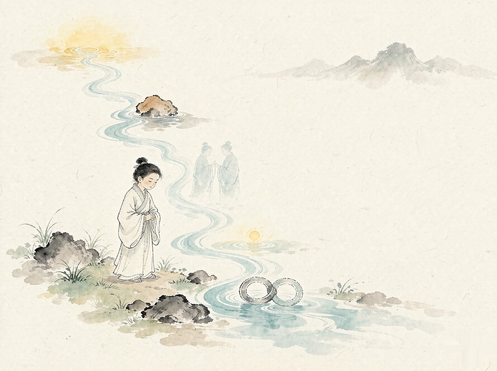
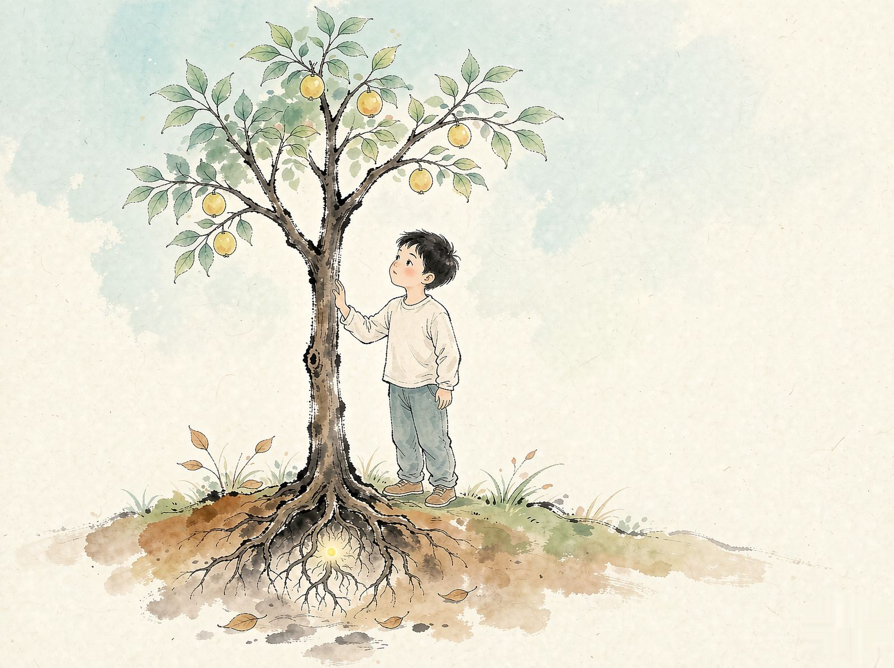

前面我们认识了仁、义、礼、智、信五种本心德行。
经文接着告诉我们：这五常，内在有天然的次序，不能混乱颠倒。
简单来讲：仁是根本的体恤之心；有仁，才知道取舍合宜，就是义；有仁义，待人自然懂得恭敬分寸，就是礼；依靠仁义礼，我们才有清醒分辨的智慧，就是智；最后言行表里一致，便是信。
次序乱了，就容易出问题：只学表面礼貌，心里没有体谅他人的仁，礼就变成虚客套；一味讲守信，不分是非善恶，就是愚直。

放到今天也是一样。我们待人做事，先存善意，再守底线，懂得尊重，明辨是非，言而有信。本心根基稳住，外在的言行才不会散乱颠倒。

落到心上理解：所谓不乱，是体用不乱。以德性本心为根，外在举止为枝叶。可以变通形式，但不要丢掉根本；根基一乱，所有礼貌、承诺、聪明，都会沦为巧饰。
重礼表、守信约，而无仁无义，流于虚伪愚执；拿智巧算计，包装成礼、信，颠倒德的次序。
以仁为本，依次起用，礼智信皆由本心流出；智慧用来护持仁、义，诚信服从是非底线。
一、勘俗见。很多注解把「不容紊」理解为背诵顺序不能乱，这是表层。真正的不乱，是心行次序不乱。
二、现代对照。教孩子礼貌（礼）、守约（信）之前，先培养共情善意（仁）与是非底线（义）；不然礼貌会变成讨好，守信变成盲从。
三、承接常变主线。和前面一脉贯通：名目、仪式可变，德用的本末逻辑不可紊乱；可变的是相，不可紊的是体用秩序。
四、承接教与学二分。家长引导看清德行的本末、不教虚礼愚信，属施教一侧；孩子遇事先存善念、再辨是非，是自主修习。
接上选择力练习：世事千变，守住德之本末，不被表象次序迷惑。
紊，《说文》：乱也。全句释义：仁义礼智信这五重德用，有根干枝叶的内在相生秩序，本末不可颠倒混杂。承接上句列述五常，划定修德的核心准则，是承接「国之良」的向内修持规范。
二 · 命题考辨（一）辨析两层「次序」。表层次序：文字诵读顺序仁、义、礼、智、信，这只是传习的方便排序，不是硬性铁律。深层次序（不容紊的真义）：仁是恻隐之本，是德的源头；由仁生义，建立取舍边界；仁义发而为礼，显为待人的分寸恭敬；以仁义礼为标尺，生出明辨之智；最后以信落实，言行一如。
须说明：五德相生的次第，是先儒未尽言、后世注家亦不一致的一层，本稿取其义理次序，不等于经文本有一条钦定的排序。
颠倒之病，举几类典型：有礼无仁，繁文客套、内心冷漠，是虚礼；有信无义，坏人之约也死守，是愚信；有智无仁，聪明机变用来谋私算计，是奸智。这就是经文所说的「紊」。
（二）对照当下现代语境。现代伦理同样面临本末颠倒：契约、规则、礼仪、逻辑（礼、信、智）很容易被当成最高准则，而共情、人道底线（仁、义）被后置。此句的警示在今天尤为重要：规则、契约、理性是工具，工具是末；仁与道义是本体。工具服务本心，不是本心服从工具。
依旧沿用全书范式：五常是一套心性模型快照，快照的名目可以重新诠释，但本末相生的秩序，不可打乱。
（三）般若范式互参。五常名目是相待假名，是对心性起用的归类。自性本体不分仁义礼智信，但随缘起用，自有天然次第。联动空杯模型：虚空本体本无次第，虚空遇缘显现德相，根、干、枝、果自有次序，不可颠倒。
呼应「本乎数」：五为五行之数，五行相生，对应五常相生；数用来模拟秩序，不可执数字序列为实。
（四）延伸义理。对照般若：布施、持戒、忍辱、精进、禅定、般若六度，同样有次第，而不住次第之相。此处「不容紊」不是执着次第相，而是修持时防止自己落入本末倒置的伪德；明白次序，又不被次序束缚，才是中道。只知不乱而固守形式，也是一种执着。
三 · 跨典互参《道德经》：「大道废，有仁义。」老子提醒仁义已是次生之德，但并不否定德的次第。
《金刚经》：「菩萨应离一切相，发阿耨多罗三藐三菩提心。」修五常而不执着「我在修五常」，不执着次序相。
串联前文：国土区划、四民职业，皆可变相；五常德轨，是调心常道，常道之中，亦不可执相。
四 · 与前后课的张力呼应「人不学，不知义」：义，即是明辨本末先后，不被德行的外表迷惑。
呼应「玉不琢，不成器」：打磨自心，就是时时检点，有没有把巧饰、客套、契约放在仁心道义之前。
呼应「教之道，贵以专」：见闻之学，既要知五常之名，更要守住本末次序，不流于伪德。
次第链条继续延伸：…… → 曰仁义，礼智信 → 本课
一、仁为本，有没有特殊情境，义可以优先？如何区分权变与紊乱？
二、如何区分「守住次序」和固化教条？权变的边界在哪里？
三、自性本体无次第，为什么起用之后必须讲究次第？